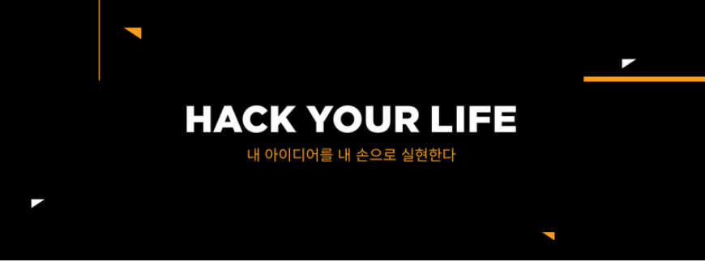

홍보영상
표어는 "내가 직접 프로그래밍하겠다." , "Hack Your Life", "I have a Dream"등등...
내 손으로 내가 구상한 아이디어를 실현한다. 라는 가장 큰 의미를 가지고있음.
또한 그동안 대학생 대상으로 했던 코딩 교육을 일반인들에게도 혜택을 주고자
멋쟁이 사자처럼 직장인 프로그램도 만들어졌다.
홍보영상
초.중.고등학교 학생들을 대상으로 코딩 교육단체인 "아기 멋쟁이 사자처럼"
도 만들것이라는..(제가 동아리 활동중 들었던 뇌피셜이니 확정된것은 아닙니다...🤭)
멋쟁이 사자처럼의 스폰서

 이외의 추가사항들은 멋쟁이 사자처럼 공식 홈페이지,페이스북을 참조해주세요.
멋쟁이 사자처럼 공식홈페이지
멋쟁이 사자처럼 직장인 공식홈페이지
멋쟁이 사자처럼 페이스북 공식홈페이지
이외의 추가사항들은 멋쟁이 사자처럼 공식 홈페이지,페이스북을 참조해주세요.
멋쟁이 사자처럼 공식홈페이지
멋쟁이 사자처럼 직장인 공식홈페이지
멋쟁이 사자처럼 페이스북 공식홈페이지